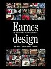
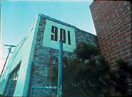
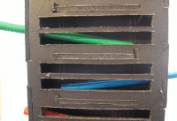

Gravity Metallophone
Homespun programmed metallophone played by falling marbles: precedent, directions and guide.
A Musical Precedent
 Eames Design: The Work of the Office of Charles and Ray Eames catalogues the many disciplines approached by the couple during the post World War II years. Page after colourful page summarises the furniture, films, architecture and exhibitions each born from their inquisitive and playful approach to design and products. Scant details on the way the office went about producing such works though leaves you trying, and no doubt failing, to bridge the divide from a mere common office to their workshop. We are left with only the hints of the stories behind these ventures with the changing list of staff members and office locations over the years.
 From the many views of the Eames one of the most beguiling, by its simplicity and adroitness, is from their relatives Eames Demetrios and Lucia Eames, 901: After 45 Years of Working. A documentary of the closing of the office at 910 Washington Boulevard after the death of Ray. It is a first-person ramble through the warren of worshops, offices and storage spaces, where every inch is bursting with the remants of the hundreds of projects undertaken by the office over the years. It is both aspiring and quite humbling.
I was drawn back into this magical world recently when it eventually dawned upon me that the tune that I had been incessantly humming lay at the door of the Eames' office. Not the hurdy gurdy, but rather the tinking waterfall of the Musical Towers. According to the documentaries narrative, a task for new employees of the office was to rearrange the tower's tune by altering the configuration of tuned metal plates struck by the calvacade of falling marbles. For musical instruments they are quite an intimidating sight, taller than a man, the marbles are shot atop by the thrust of a pneumatic pump, where they then chime each plate in turn on their descent. The pedantic strikes by one marble compound into naturalistic harmonies when concurrent marbles are flowing down the steps of the ladder.
{kind=link}
{kind=link}
{kind=link}
{kind=link}
{kind=link}
Visit the Eames Office for relevant books and films.
Weekend Prototype
Driven to distraction by the chiming, and with a long holiday weekend at hand, it seemed the only remedy would be to build a version of the tower for myself. The short time frame limited the materials at hand: for the chimes, a few sets of children's xylophones with colourful metal tubes laid out on plastic runners; glass marbles; 5mm black foamcore for the body.
Once the tubes were prised away from their frame, an early experiment suggested marbles should roll across them longitudinally, rather than across the breadth as in the Tower. This led to a structure of two pillars holding alternating tubes set towards each other, with sides completed to form a box to contain the marbles. A marble dropped in at the top on one side would roll along the first tube, fall at the end striking the tube immediately below it, then roll back towards the original side, where it would fall down at the end to the tube below it, and so on until it reached a bucket at the bottom.
The body is composed of three repeating narrow boxes which can be stacked on top of each other, together with a bucket at the bottom to hold the fallen marbles. The entire structure slots together and then attached to a wall for strength.
